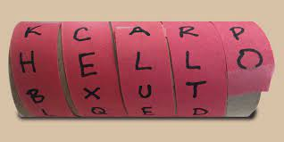
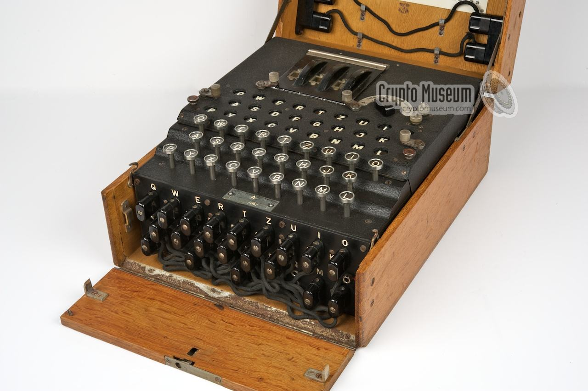

This page is meant to explain encryption and tell of previous encryptions that were used in the past and then end before any modern crypto systems that could be used today.
What is encryption. Encryption is when something is converted into some type of code that can be converted back.
The idea of encryption has been around for almost as long as history itself. Some of the oldest examples that can be found go all the way back to about 2000 B.C in Egypt in the tomb of nobleman Khnumhotep II . In this tomb, there are characters that is different from regular ancient Egyptian. It is theorized that it was written differently to limit the amount of people that could understand it. That is about the definition of encryption right there even if it is not what you would think of
 About 1500 years after that, the Spartans would make one of the first, if not the first, key exchanges called scytale. The way it worked was that a spartan would wear a belt with an encoded message on it. When wrapped correctly around a cylinder it would show a hidden message. It relied on other people not knowing about the decryption method for it to be safe.
Around 100 B.C, Julius Caesar was known to for using an encryption system that would shift the the letters in the alphabet a certain amount. For an example, he could shift all characters over 3 characters and it would lead to x being a, y being b, and so one for the rest. The code could be easily cracked if you knew the language and knew which words were most common such as: the, as, a, I, and so on. The cypher could be cracked by brute force testing each shift over since there are not many characters. It worked out for him but it can not be used because of the reasons before.
In the 1600's,Blaise de Vigenère would create his own cypher that would be similar to the Caesar cypher and the scyfall that the Spartans used. In the Vigenère cypher you shift your letters over based on a key value.
For example, if your key is 'Tad' and your word is 'abe', you get a=1 t=20 d=4, 1-20= 7 -1 =6-4 = 2, a=b, leading you to get the encoded text 'bcf'.
This is another one of the key exchanges, you would hand off the encoded message and the key that was used. This method has a flaw, just like the Ceaser cypher, with text analysis, you can look for common words and solve the cypher.
 The last encryption method to talk about here is the Enigma Machine. Right before world war two, Arthur Scherbius would invent the enigma machine. The machine would work through a key exchange. The machine would give you three numbers that the other person would have to know, and then you would type your message, but the gears would change each time, making sure that each letter is different. Every time you typed on the keyboard, that would shift the gears and that would change the electrical circuit that was connected to the output of the machine, therefore leading to an encoded message. This became even harder to crack when some of the machines would have additional plugs in it to switch the outputs of some characters. The nazi navy would have 10 pair's of letters and a calendar for each month that would to them what to set the switches to. Example: a=q q -> enigma machine-> l.
The problem with the machine was that you could never get the letter you typed in. a could never be a, b could never be b. This lead to people being able to test common phrases against the message and would then be able to trial and error the switches and rotations on the machine from there. A machine called the bombe was invented in order to make this process only take about 20 or so minutes.
In early 1970's, IBM would make their own crypto system called Lucifer. NIST would ask for a new block cypher system in 1973. Lucifer would be accepted and named the Data Encryption Standard for a while until computing power increased and the system could be solved easily with brute force. The problem with the cypher was the small size of encryption keys that could be used for it.